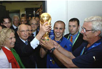

ПРИВЕТ УЧАСТНИКАМ СОРЕВНОВАНИЙ!
ФУТБОЛ
 Кирпичный фон визуально не имеет начала и конца. Если в качестве фона требуется более сложное изображение, оно при способе «жёлтые и голубые кирпичи» прижмётся именно к резиновой границе между колонками, поэтому этот способ не подойдёт в случае, если фон с резиновой правой границей необходимо левой гранью прижать к левой границе колонки, либо если фон с резиновой левой границей необходимо правой гранью прижать к правой границе колонки. Более гибкий подход подразумевает раздельную установку фона с двух сторон от резиновой границы между колонками. Суть метода та же — для резиновой границы используется специально подготовленное фоновое изображение, имеющее переход между двумя видами фона на нужном проценте ширины, но сейчас слева либо справа от границы фон будет прозрачным. Предположим, что на сайте про черепашек нужно сверстать следующий фон для столбцовГЛАВНОЕ НЕ ПОБЕДА, А УЧАСТИЕ!